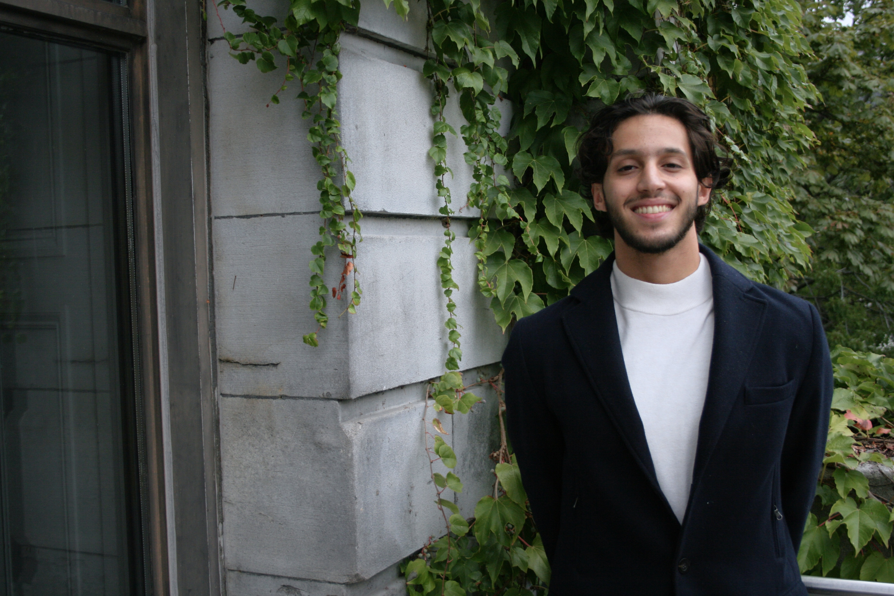

About Me
Thanks for checking out my UX Design Portfolio! I’m a passionate aspiring UX Designer, currently based in vibrant Montreal, Canada. With a solid foundation in Media, Communication, and Marketing, I find that these fields beautifully complement my growing expertise in UX. I’m currently pursuing a Master's degree in UX Design at McGill University, while continuously sharpening my skills through additional UX courses. On a personal note, I was born and raised in Palestine, and I bring a warm and dynamic energy to everything I do. I thrive on new challenges and love the thrill of trying something for the first time. Outside of design, my interests span from politics and history to bodybuilding and cooking—balancing both my mind and body in creative ways. Check out my CV below!